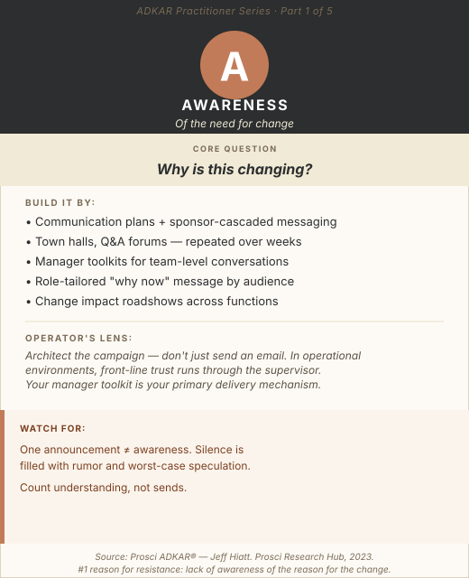

The email went out. The all-hands was held. Leadership said the right things. Everyone was informed.
Three months later, the project team is asking why people "still don't understand why this is happening."
This is the Awareness gap in its most common form, and the reason it persists is that most organizations confuse information delivery with awareness building. They are not the same thing. Awareness is not a message. It is a state of understanding that people arrive at through repeated, relevant, trust-building communication over time. You cannot declare it. You have to architect it.
Foundation
What Awareness Actually Is
Awareness is the first building block in the ADKAR model, and the one most frequently assumed rather than built. It is not simply "knowing that a change is happening." Awareness means an individual understands three specific things:
- What is changing
- Why it is changing: the business reasons, the market or operational pressures, the risks of staying the same
- Why now: what has made this the right moment, and what happens if the organization doesn't move
Without all three, Awareness is incomplete. A person can know "something is changing with our procurement process" and still have near-zero Awareness in the ADKAR sense if they don't understand the drivers behind it or the consequence of inaction.
The vacuum left by incomplete Awareness is never neutral. It fills with rumor, fear, worst-case speculation, and the quiet conclusion that leadership isn't being straight with them. According to Prosci research, the single top reason employees resist change is lack of awareness of the reason for the change — not complexity, not skill gaps, not culture. The "why" is the foundation everything else stands on.

ADKAR Practitioner Series — Part 1: Awareness. Diagnose the barrier point first.
Diagnosis
How to Confirm an Awareness Barrier Point
Before prescribing an Awareness intervention, confirm it's actually the barrier. Signs that an Awareness gap — not a Desire or Ability problem — is what you're dealing with:
Awareness Gap Signals
- People are asking "why is this happening?" long after the change has been announced
- Misinformation and rumors are circulating in team conversations
- Managers report that their teams "don't see the need" for the change
- Different parts of the organization have different understandings of what's actually changing
- Employees are supportive in principle but uncertain about what specifically is expected of them
A simple diagnostic: ask a frontline employee three questions — what is changing, why it is changing, and why now. If they can answer all three with reasonable accuracy and specificity, you have Awareness. If they give you a vague or incorrect answer, you have your barrier point.
Program Design
Eight Blueprints for Building Awareness
The Three-Question Awareness Audit (Start Here)
Before designing any communication, your team should be able to answer three questions in plain language — not corporate language — for every major affected audience: What is changing, specifically? Why is it necessary right now? What happens if we don't change?
If your project team cannot answer all three for each major audience, your awareness campaign will be incomplete before it starts. This audit is the brief for everything that follows.
The Awareness Campaign Architecture
Awareness is not built in one event. It is built through a sustained campaign — typically 4–8 weeks for significant changes:
- Week 1 Executive launch. The senior sponsor explains the three-question answers publicly, with data. Tone: transparent, serious, and direct. Not a celebration — an honest conversation.
- Weeks 2–3 Manager cascade. Using the toolkit, people managers run team-level conversations that translate the organization-level message into "what this specifically means for our team."
- Week 4 Q&A sessions. Open forums, small group conversations, or digital Q&A channels where questions can be asked and answered honestly. Anonymous submission options reduce the barrier to raising hard questions.
- Week 5 Reinforce through channels. Updated intranet content, short FAQ documents, short leadership video messages that address the questions that actually came up in the forums — not just the questions that were anticipated.
- Week 6 Pulse check. A brief 3-question survey to identify where Awareness gaps still exist by team or function. Use results to direct targeted follow-up, not another mass broadcast.
This is a starting framework, not a formula. Larger, more complex changes require longer campaigns and more layers. The point is that Awareness is designed and measured — not sent and assumed.
The Manager Toolkit
In operational and enterprise environments, the people manager is the most important Awareness channel — more trusted than executive email, more effective than intranet updates. A manager toolkit that actually gets used contains a 10-slide deck (max) designed for a 20-minute conversation — not a presentation, a conversation guide. A FAQ document with the top 15 questions anticipated, answered honestly, including the hard ones. Talking points that connect the organization-level drivers to the specific impacts on their function. And a two-page impact brief for their specific department.
The most important element is honesty. Managers who read a toolkit and feel they're being asked to spin a difficult message will not deliver it. Toolkits that acknowledge uncertainty where it exists build more trust than ones that present false confidence.
The Executive Storytelling Series
A single all-hands announcement from the CEO is not a campaign. A sequenced series of short communications from senior leaders — each one building on the last — is far more effective at moving Awareness from "I heard something is changing" to "I understand why this matters."
Format that works: 3–5 minute recorded videos, shot in a real operational setting (not a boardroom), where the executive answers the three core questions directly and personally. One video per week for the first three weeks. Each one addresses a different angle: the business case, the risks of the status quo, what success looks like. The video format builds Awareness in a way that email cannot: it is personal, non-skimmable, and it signals that leadership is willing to go on record with the message.
The Change Impact Roadshow
For changes that touch multiple functions or teams, a cross-functional roadshow session that shows how the change moves through the end-to-end value stream is one of the most effective Awareness tools available. Bring together representatives from all affected functions in a facilitated session. Walk through the process flow from beginning to end, pausing at each handoff to show what changes, for whom, and why.
This accomplishes two things that individual team briefings cannot: it makes interdependencies visible (so people understand their piece in context), and it dramatically reduces the speculation that generates resistance. In process excellence work, this roadshow often doubles as a stakeholder alignment session, surfacing integration gaps that the design team missed.
Listening Before Broadcasting
Counterintuitive, but high-value: before launching your awareness campaign, conduct 10–15 structured stakeholder interviews or focus groups with representatives from the key affected populations. Not to redesign the change: to understand what people already believe about the current state, what assumptions are pre-loaded, and what concerns are already in the room before the campaign starts.
This intelligence directly improves the campaign's effectiveness: you learn which fears need to be addressed head-on, which benefits will land, and which messages will fall flat or feel tone-deaf. Organizations that skip this step often discover midway through their campaign that they've been answering the wrong questions.
The Awareness Heat Map
After the initial campaign, run a 3-question pulse check by team or function and plot the results on an org chart. Where awareness scores are strong, communications can shift to maintenance. Where they're weak, direct targeted conversations, not more mass broadcasts.
The heat map also surfaces a pattern that's easy to miss in aggregate data: awareness gaps are rarely uniform. Often, a specific function, geography, or management layer has not received or processed the message effectively. The heat map points you directly at the intervention that will actually move the needle. A team with low awareness almost always has a manager who has not yet run the cascade conversation.
The "Cost of the Status Quo" Evidence Package
Most awareness campaigns explain what is changing. Fewer effectively explain why the current state is inadequate, specifically, not rhetorically. Build a dedicated evidence package: current performance data showing where the status quo is failing (error rates, cycle times, customer complaints, compliance gaps, cost overruns), paired with 2–3 brief stories that make the data personal. Data shows the scope of the problem; stories make it real.
In operational environments, this is especially powerful because front-line workers often already feel the pain of the current state, they just haven't seen it quantified or validated by leadership. An evidence package that says "you're right, here's how bad it actually is" builds Awareness and Desire simultaneously.
The Operator's Lens
Cynicism is earned. In organizations with a history of change initiatives that were launched with fanfare and quietly abandoned, the workforce has a sophisticated skepticism about announcements. Your awareness campaign must explicitly address "what's different this time," not with words, but with evidence. Visible executive behavior, dedicated resources, honest timelines, and willingness to acknowledge what's hard are the signals that cut through initiative fatigue.
Process changes have downstream complexity. When a process changes in one part of the operation, the awareness campaign must explicitly cover the downstream effects. People don't just need to understand their own piece, they need enough cross-functional context to understand why the handoff protocols are changing, what their upstream partners will be doing differently, and what's expected of them at each boundary. Missing this creates Awareness gaps that manifest as adoption problems in functions that weren't the "primary target" of the change.
Front-line trust runs through the supervisor. Research consistently shows that operational employees trust their direct supervisor more than any other source of information about change. An executive video helps. An intranet update helps. A 15-minute honest conversation with their supervisor, using language specific to their team's workflow, moves Awareness more than both combined. Your manager toolkit and cascade training are not supporting activities. They are the primary delivery mechanism.
Common Traps
Mistakes to Avoid
Counting sends, not understanding.
Email open rates and meeting attendance are activity metrics. Awareness is measured by whether people can accurately answer the three core questions. Measure the output, not the input.
Uniform messaging for non-uniform audiences.
Executives, people managers, and front-line employees all need Awareness, but the relevance of the "why" must match their role and concerns. One message for all audiences is a shortcut that costs you at every level.
Stopping after the launch.
Awareness campaigns that end at the kickoff event are the norm, not the exception. Awareness decays without reinforcement. Build the campaign to run through the first phase of implementation, not just through the announcement.
Confusing transparency with oversharing.
Honest communication about uncertainty ("we don't yet know how this will affect X, and we'll communicate as soon as we do") builds more trust than either false confidence or information overload. Acknowledge what you don't know. People can handle uncertainty better than they can handle being misled.
Build it deliberately, or repair it expensively later.
Sources: Prosci ADKAR® Research Hub. Prosci Best Practices in Change Management, 2023. Prosci Communications Planning guidance.